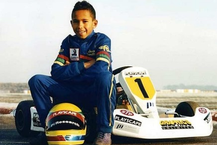
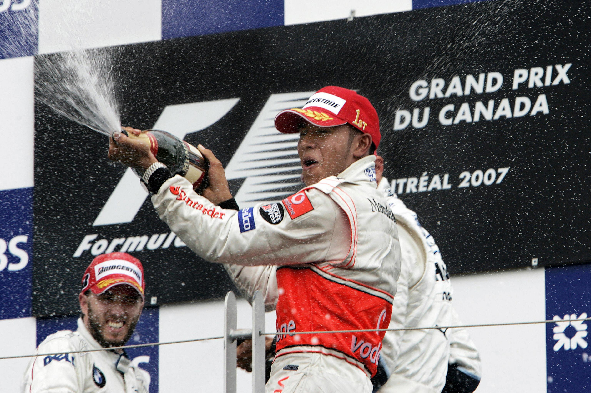
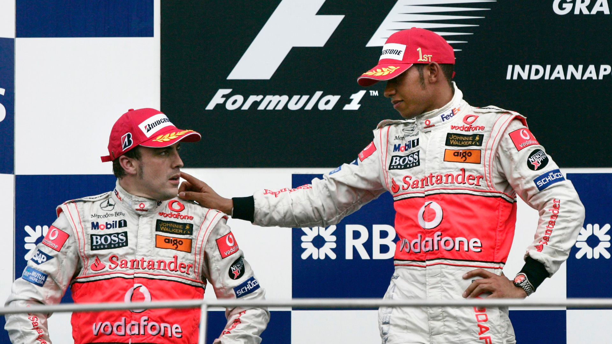
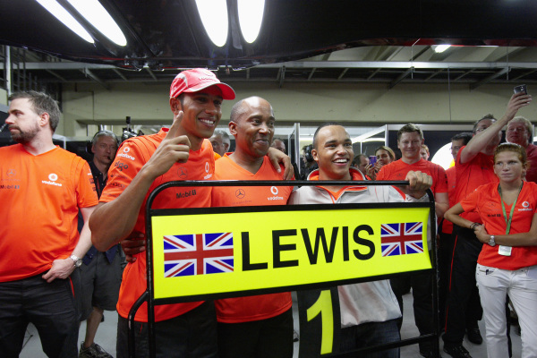

Lewis Hamilton, nato il 7 gennaio 1985 a Stevenage, nel Regno Unito,
è un pilota automobilistico britannico di fama mondiale.
Figlio di Anthony Hamilton e Carmen Larbalestier, Lewis ha iniziato a coltivare la passione per i motori fin da giovane.
La sua carriera nel mondo del karting ha preso il via all'età di otto anni,
dimostrando presto un talento straordinario.
Hamilton ha scalato rapidamente le categorie giovanili del motorsport, guadagnandosi una reputazione come uno dei talenti più promettenti.

Nel 2001, è entrato a far parte del programma di giovani piloti della McLaren.
Il debutto di Hamilton in Formula 1 è avvenuto nel 2007 con il team McLaren, ottenendo subito un notevole successo.

Ha impressionato il mondo dello sport con le sue abilità di guida, conquistando numerosi podi e vincendo diverse gare durante la sua prima stagione.
Il suo duello con Fernando Alonso, già campione del mondo, ha attirato l'attenzione di tutti gli appassionati di Formula 1.

Il punto culminante della sua carriera è stato il campionato del mondo del 2008,
quando Hamilton ha vinto il titolo mondiale in una spettacolare gara finale a Interlagos, Brasile.
Da allora, ha continuato a collezionare successi, diventando uno dei piloti più decorati della storia della Formula 1.

Nel 2013, Lewis Hamilton ha firmato un contratto con il team Mercedes, un accordo che si è rivelato estremamente fruttuoso.
Ha dominato il campionato del mondo nel 2014, 2015, 2017, 2018, 2019 e 2020, eguagliando e superando i record di molti grandi nomi della Formula 1.
Nel 2021, Hamilton ha esteso il suo contratto con la Mercedes e ha continuato a competere al più alto livello.
Al di là delle piste, Hamilton è anche noto per il suo impegno sociale e filantropico.
Si è fatto portavoce di questioni come la diversità nel motorsport, i diritti umani e l'ambiente. La sua influenza nel mondo dello sport e al di là di esso lo ha reso una figura iconica.